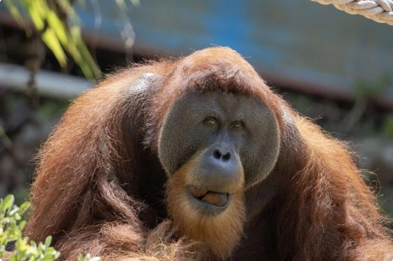
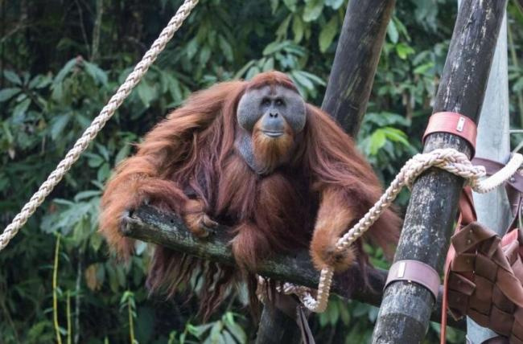
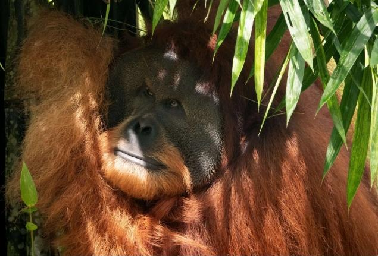
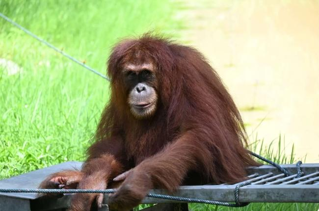
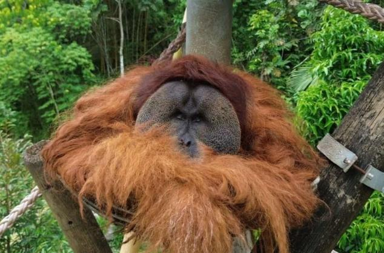

Krismon
Jenis Kelamin : Jantan
Tanggal Penyelamatan : 30 Mei 2016
Perkiraan Tahun Lahir : 1996
Kondisi : Trauma dan kelemahan fisik
Jejak : Krismon disita pada tahun 2016 sebagai hewan peliharaan ilegal. Ia telah dipelihara selama 19 tahun di dalam kandang logam yang ukurannya hanya sedikit lebih besar dari tubuhnya . Kita tahu ia menghabiskan 19 tahun di sana karena namanya merupakan singkatan dari 'Krisis Moneter', atau Krisis Moneter, yang terjadi pada tahun 1997 di Indonesia. Setelah sekian lama, pintu yang ia gunakan untuk masuk ke kandang sudah tidak cukup besar lagi, sehingga kandang harus dibongkar untuk mengeluarkannya. Setelah menghabiskan bertahun-tahun di ruang yang sangat terbatas, Krismon masih menunjukkan kelemahan fisik dan mental yang cukup parah dan tidak akan pernah bisa bertahan hidup di alam liar.

Leuser
Jenis Kelamin : Jantan
Tanggal Penyelamatan : 20 Februari 2004
Perkiraan Tahun Lahir : 1999
Kondisi : Buta
Jejak : Leuser disita sebagai hewan peliharaan ilegal ketika ia berusia sekitar 5 tahun dan dilepaskan ke alam liar di Taman Nasional Bukit Tigapuluh di Jambi setahun kemudian. Ia hidup subur sebagai orangutan liar di hutan selama beberapa tahun, hingga suatu hari, ia memasuki lahan pertanian di dekatnya dan ditembak 62 kali oleh beberapa penduduk desa. Akibatnya, ia menjadi buta total dan tidak lagi dapat bernavigasi serta mencari makanan di hutan, sehingga ia kembali ke SOCP untuk perawatan jangka panjang. Walaupun buta, insting alami Leuser masih kuat dan peka, jika orang yang mendekati nya adalah orang yang tidak biasa dengan nya Dia akan berperilaku waspada Namun jika orang yang sudah biasa di dekat nya seperti penjaga nya, dia akan berperilaku normal.

Fahzren
Jenis Kelamin : Jantan
Tanggal Penyelamatan : 9 Oktober 2013
Perkiraan Tahun Lahir : 1998
Kondisi : Sudah dewasa dan terlalu terbiasa dengan orang lain dan fisik nya terlalu kuat bahkan bisa mematahkan batang bambu
Jejak : Fahzren diselundupkan secara ilegal ke Malaysia saat masih bayi, dan tumbuh besar dengan tampil di 'pertunjukan hewan', jenis pertunjukan yang melibatkan mengendarai sepeda, bermain golf, dan hal-hal semacam itu. Peraturan perdagangan hewan internasional mengharuskan hewan yang diselundupkan secara ilegal ke luar negeri untuk dipulangkan ke negara asalnya, sehingga ia dikembalikan ke Indonesia pada tahun 2013. Karena saat itu ia sudah menjadi orangutan jantan dewasa yang besar dan kuat, serta terbiasa berinteraksi dekat dengan manusia, diputuskan bahwa ia kemungkinan besar tidak akan mampu belajar bertahan hidup lagi di alam liar, dan berpotensi berbahaya jika bertemu dengan orang-orang di hutan. Oleh karena itu, diputuskan bahwa ia harus menghabiskan sisa hidupnya di Suaka Orangutan. Fahzren punya kasus kusus , terkhusus nya Bule Terutama yang memakai Kamera lensa panjang (Lensa Tele photo) maka Fahzren akan Merasa Tergantung dan Bersifat waspada hal tersebut Terjadi Karena Trauma Yang Belum diketahui namun untuk pengunjung jika pengunjung biasa dan bule selagi tidak memakai kamera lensa panjang respon yang di berikan tidak ada, dan bersikap tidak peduli.

Dina
Jenis Kelamin : Betina
Tanggal Penyelamatan : 27 Juli 2015
Perkiraan Tahun Lahir : 2015
Kondisi : Buta
Jejak : Dina diselamatkan dari perdagangan satwa liar ilegal ketika dia masih bayi, berusia kurang dari 1 tahun. Ketika pertama kali tiba di SOCP setelah disita, ia didiagnosis menderita malaria, yang mengakibatkan infeksi otak yang melumpuhkannya hampir sepenuhnya dari leher ke bawah.Untungnya, setelah berbulan-bulan perawatan dan perhatian intensif, ia mendapatkan kembali 100% mobilitasnya , dan tidak lagi menunjukkan tanda-tanda fisik penyakitnya, tetapi ia tidak pernah mendapatkan kembali penglihatannya dan tetap hampir buta total.

Lewis
Jenis Kelamin : Jantan
Tanggal Penyelamatan : 30 Agustus 2016
Perkiraan Tahun Lahir : 1991
Kondisi : Buta
Jejak : Meskipun mengalami kesulitan yang tak terbayangkan, Lewis telah berhasil mengatasi rintangan. Setelah pulih dari trauma akibat ditembak 40 kali oleh beberapa petani di tepi hutan, ia awalnya menemukan perawatan dan ketenangan di Pusat Karantina dan Rehabilitasi SOCP. Lewis adalah orangutan yang luar biasa tinggi, dengan lengan yang sangat panjang. Terkadang dia juga berjalan tegak lurus, dengan dua kaki, sangat mirip manusia. Kini, Lewis menikmati babak baru dalam hidupnya di Orangutan Haven. Momen pertama kali ia keluar dari rumah dan menuju pulaunya sungguh menakjubkan. Dengan santai dan teratur, ia menjelajahi lingkungan barunya dengan penuh rasa ingin tahu, melambaikan tangannya ke sana kemari untuk 'merasakan' apakah ada sesuatu di dekatnya, menunjukkan ketahanan makhluk-makhluk luar biasa ini.

Dek nong
Jenis Kelamin : Betina
Tanggal Penyelamatan : 7 September 2007
Perkiraan Tahun Lahir : 1999
Kondisi : Masalah arthritis
Jejak : Awalnya diselamatkan pada tahun 2007 sebagai hewan peliharaan ilegal dan dilepaskan ke alam liar setahun kemudian, Dek Nong menghadapi berbagai tantangan di hutan, termasuk kelumpuhan misterius pada tahun 2009. Meskipun ia pulih dengan sangat baik, pergelangan tangan kirinya tetap bengkok pada sudut yang tidak wajar, dan ia masih memiliki beberapa masalah kecil dengan beberapa persendian lainnya, tetapi selain itu ia sehat dan bugar. Dek Nong adalah individu yang sangat cerdas dan ingin tahu , selalu mengamati siapa yang melakukan apa di sekitar lembah pulau itu. Ketika pertama kali diizinkan keluar ke salah satu pulau, dia dengan hati-hati menjelajahi jembatan, menara, dan keranjang, jelas menikmati kebebasan barunya.